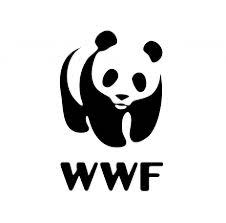

Jovanotti, pseudonimo di Lorenzo Cherubini, è un cantautore, rapper italiano classe 66 romano. È stato Claudio Cecchetto ad accorgersi del talento del cantante e a portarlo a diventare il conduttore di DeeJay TelevisionViene , sfonda nel mondo della musica intonando canzoni a ritmo di hip hop e world music. Nel proseguire della carriera i suoi brani toccano tematiche sempre più profonde e personali sulle note hip hop, funky in uno stile tutto suo e fuori dal comune. Nelle sue canzoni si sbilancia in forti prese di posizione ideologiche, parla di amore, di libertà e di attualità, con una leggerezza che trasporta, avvolge e coinvolge.
Ogni giornata sarà diversa, unica, irripetibile. Lo spettacolo comincia al tramonto e finisce nella notte. Ci sarà la console la musica come motore centrale, ci saranno a disposizione sia il palco principale che palchi secondari per ospiti di Jovanotti, artisti nazionali e internazionali, sbarcati sulla spiaggia per prendere parte a questo irripetibile e pazzesco evento intrattenendo il pubblico con musica di ogni tipo.
Si guarda il concerto sul bagnasciuga, si può partecipare a giochi, si corre si ride si balla e addirittura ci si sposa Il solo compito da seguire è ballare come se nessuno ti stesse guardando, amare come se non avessi mai amato, cantare a squarcia gola e saltare a ritmo di tamburo, con questo caloroso benvenuto l'artista accoglie i suoi numerosissimo ospiti a divertirsi e a cantare insieme a lui. Molto più di un artista, molto più di un concerto.
Jova Beach Party è prodotto e organizzato con la massima attenzione per gli aspetti legati alla sostenibilità ambientale, grazie alla collaborazione tra Trident Music e Lorenzo Cherubini.
Il focus è di "lasciare il segno senza lasciare segni " attraverso un enorme lavoro di tutela dell’ambiente sviluppato con la collaborazione di diversi partner su ciascun fase del lavoro. Il Jova Beach vuole porre sotto i riflettori la drammatica situazione ambientale e educare e sensibilizzare il suo amato pubblico alla salvaguardia del territorio nazionale e degli animali.
Il progetto ambientale del Jova Beach Party, non poteva che nascere dalla collaborazione con il WWf, ente da sempre attivo in prima linea per la salvaguardia dell'ambiente.
Intesa Sanpaolo e WWF lanciano una grande mobilitazione per ripulire e rinaturare 20 mln di metri quadri del nostro territorio.
|  |